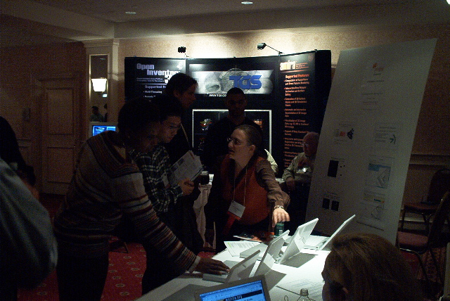

|  |
Evolutionary trees, or phylogenies, are an essential tool in biology, used in all kinds of processes such as understanding evolution, designing new drugs, predicting gene expression, and determining the origin of a virus strain. Often, for one reason or another, scientists get a large set of possible phylogenies, and they would like to understand the structure of the set and the relationships between the various possible evolutionary trees. We are writing computer software for this task. |
| Presenting software package at
InfoVis02
in Boston: Denise Edwards (left, Lehman), Nina Amenta (center, UC
Davis),
Silvio Neris (back right, Lehman). |
We are looking for several undergraduate students to join this project.
The requirements are:
The project includes:
For students who are US Citizens or permanent residents, funding is available (via National Science Foundation grant #0121651).
For more information about our project and downloading of the
software
see http://www.cs.utexas.edu/users/phylo/visualization.html.
If you are interested, please send a resume, unofficial
transcripts, and sample of a large group programming project in which
you made a significant contribution to stjohn@lehman.cuny.edu.
Include with the programming project a brief description of what
the program does, for whom it was
written (e.g. a course, an internship project), the number of
programmers involved, and your role in the project.